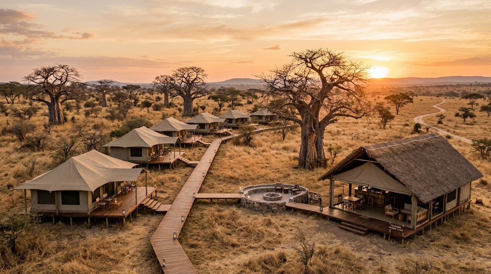

Illustration: AI-generated (Google Gemini) / EA Hospitality Pulse
Tanzania doubled the beds inside its national parks. The 160 sites it has just put on the market are in the parks nobody flies to.
TANAPA's annual results, released on 10 November, show in-park bed capacity up from 5,755 to 12,094 since 2021, a revenue target missed by about 66 billion shillings, and domestic park visits down 7.7 per cent in a single year. The agency's answer is 160 more investment sites, 130 of them camps, concentrated in a circuit whose access project the government itself asked the World Bank to cancel.
Massana Gibril Mwishawa had a good five years to report. On 10 November the conservation commissioner of the Tanzania National Parks Authority set out a run of numbers most state tourism agencies on the continent would envy. Visitors to the country's twenty-one national parks had risen from 708,319 in 2021/22 to 1,559,641 in 2025/26. Revenue had gone from 174 billion shillings to 534 billion over the same period, roughly 201 million dollars. Rhino numbers were up from 128 to about 170. Rangers had run 301,314 patrols. "We also confiscated 65,860 livestock found illegally inside national parks," he said.
Then came the headline the investment newsletters picked up. "TANAPA has identified 160 new investment sites," Mwishawa said: thirty for lodges, 130 for camps.
That is the figure that will be quoted from Nairobi to Johannesburg for the next fortnight, and it is the wrong one to read. The 160 is not an opening. It is a re-offer, and the previous two attempts to clear the same land tell an East African operator far more about where safari rates are heading in 2027 than any growth number in the release.
TANAPA publishes an investment prospectus, and the back issues are still on its website. The 2022 edition listed 107 sites plus four special tourism concession zones. Nyerere, the vast park carved out of the old Selous, accounted for 28 of them, four lodges and 24 permanent tented camps. Ruaha accounted for another 28. Mikumi had five. Katavi had four. By the 2024 edition the total had grown to roughly 181 entries, and the growth was concentrated in exactly the same places: Nyerere's allocation had more than doubled to 60 sites, Ruaha held 30, Katavi had gone from four to twenty. Serengeti, the park that actually sells, carried a single entry, a proposed golf course with accommodation on 450 acres at Fort Ikoma.
So the land on offer in southern and western Tanzania has been expanding for four years while the land on offer in the north has not. The obvious reading is confidence. The more useful reading is that the southern sites are not being taken up, and each prospectus adds more of them to a list that has not cleared.
The reason is not a mystery to anyone who has tried to sell a Ruaha itinerary. In 2018, when the World Bank was preparing the project meant to fix it, the southern circuit covered about 77,000 square kilometres and, as Oxford Business Group put it at the time, "the region currently attracts only 1% of all tourists to Tanzania." Eight years and a great deal of promotion later, the share figures TANAPA's own data produced for the first half of 2026 put Serengeti at 13.1 per cent of visits and Tarangire at 9.0 per cent, against 2.6 per cent for Mikumi, 0.7 per cent for Udzungwa Mountains and 0.6 per cent for Ruaha. A park holding thirty investment sites is drawing six visitors in every thousand.
The project meant to change that arithmetic was called REGROW, Resilient Natural Resource Management for Tourism and Growth, a 150 million dollar credit from the International Development Association approved in September 2017. Its design was precisely the access layer the prospectus assumes: fifteen airstrips across four national parks, a new road from Iringa town to Ruaha, student hostels, administrative buildings, plant for maintaining all of it. The World Bank's own projection was modest and honest, visitors rising from 98,500 to 135,000 and about 5,000 jobs.
It never happened. The Bank suspended disbursement in April 2024 after allegations of violence against farmers and pastoralists around Ruaha's expanded boundary, its Inspection Panel concluded that September that the Bank had failed to follow its own resettlement and risk policies, and in the Bank's flat institutional phrasing, "The Project was subsequently cancelled on November 6, 2024, at the request of the Government." Two years on, the follow-on money is a 2.8 million dollar climate adaptation grant and a share of a 110 million dollar programme called SCALE, which is not an airstrip.
The Treasury has been picking up part of the bill instead, and the ministry is keen for that to be noticed. Presenting the 2026/27 estimates in Dodoma on 15 May, the minister for natural resources and tourism, Dr Ashatu Kijaji, told Parliament that "the government completed the construction of three airstrips in the Nyerere and Ruaha National Parks," that eight further airstrips in Mikumi, Ruaha, Nyerere and Serengeti had been rehabilitated, and that "the construction of Mikumi Airstrip is expected to be completed by October 2026." The Citizen reported in June that about 146.6 billion shillings, some 56 million dollars, had gone into southern circuit infrastructure. That is real, and it is also roughly a third of what the cancelled credit was worth, delivering three new airstrips where fifteen were designed, with the Iringa road still a line in a prospectus rather than a surface a client's vehicle can use.
What sits underneath the Ruaha sites has not been settled either, and any operator thinking of bidding on one should price that. Anuradha Mittal, executive director of the Oakland Institute, which campaigned on the original project, said in January that "the situation is very dire on the ground," that two people had been killed since the Bank's management action plan was approved in April 2025, and that President Samia Suluhu Hassan had said in September 2025 that five villages inside the park would be relocated, which is awkward alongside the Bank's statement that the government "does not intend to resettle communities in the area in the foreseeable future." The industry's response at the time of cancellation was not triumphant either. John Corse, managing director of Serengeti Balloon Safaris and a member of the Tanzania Association of Tour Operators, called the decision "rather sad," adding that "the requirement to conserve these places remains there."
None of that is a reason for a Kenyan or Ugandan operator to feel comfortable, because the numbers in the same release that nobody led with are the ones that travel across the border.
Bed capacity inside Tanzania's national parks rose from 5,755 in 2021 to 12,094 in 2026. That is a doubling in five years, achieved while visitor numbers also roughly doubled, so it is not yet a supply problem on the face of it. The problem is in the composition and the calendar. Domestic park visits were 325,060 in 2023/24, climbed to 412,983 in 2024/25, then fell to 381,341 in 2025/26, a drop of 7.7 per cent in a single year. And TANAPA missed its own revenue target: 533.9 billion shillings against a target of 600.1 billion, with next year's target set at 720.3 billion. An agency that has just undershot by around 66 billion and raised its own bar by 186 billion is not going to be relaxed about licensing beds.
Mwishawa himself put a finger on the contradiction without quite naming it. "Remove the notion that tourism is only for foreigners or wealthy people," he said. "These natural resources belong to all Tanzanians; we have only been given the authority to manage them." He cited citizen entry fees of roughly 10,800 to 11,800 shillings for northern parks and single figures in thousands for the rest. Yet national domestic tourist numbers reportedly rose 13.1 per cent in 2025, to about 3.64 million, while domestic visits into the parks went backwards. Tanzanians are travelling more and going into national parks less. That gap is a pricing and product verdict, not a marketing gap, and it is the same verdict Kenya's own domestic bed-night shortfall delivered earlier this year.
Here is why that should concern an operator in Nanyuki or Kigali rather than only in Iringa. Of the 160 sites, 130 are camps, which are the cheapest capacity in safari to build, the quickest to open, and the first to discount when a season disappoints. In the 2022 prospectus permanent tented camps were specified at twelve to fifty beds and lodges at sixty to 150. Even a modest take-up of 130 camp sites puts several thousand mid-market beds into a regional market where the long-haul client does not distinguish between a Tanzanian camp and a Kenyan conservancy camp on an itinerary sheet, only on price. Tanzania's own exit survey has visitor spend running at 289 dollars per night in 2025, up 19.1 per cent from 243 dollars, which is a yield worth defending and precisely the sort of number that a wave of new, hard-to-fill camp inventory erodes from the bottom up.
The regional transmission is therefore not about Tanzania winning share. It is about the floor. Camps built against an access plan that was cancelled, in parks drawing under three per cent of visits, will have to be filled at whatever rate fills them, and road-transfer itineraries at discounted nightly rates are how that gets done. That resets the cheapest credible mid-market safari price in East Africa, and every rate letter in the region is written against it.
So the thing to watch over the next twelve months is not the 160. It is three much smaller numbers: whether the Mikumi airstrip actually opened in October as the minister told Parliament it would, what TANAPA does to citizen entry fees after a 7.7 per cent fall in domestic park visits, and how many of the 160 sites are under signed lease by this time next year. The 2022 prospectus offered 28 sites in Nyerere. The 2024 one offered 60. If the 2027 edition offers more again, the answer to all three questions will already be in.
📣 Telegram 💬 WhatsApp 💼 LinkedIn 📚 All guides